Design & maintenance
Virtual studios
Real-time spaces for broadcast and interactive experiences.
Aximmetry Software & Scenes
Showreel from the last few years
These virtual spaces use Aximmetry software for real-time rendering. They were created using 3ds Max and Lua scripting.
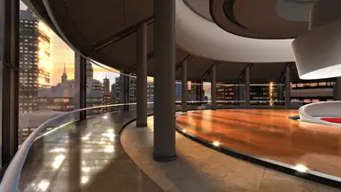
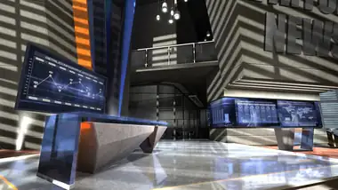
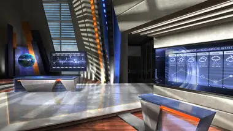
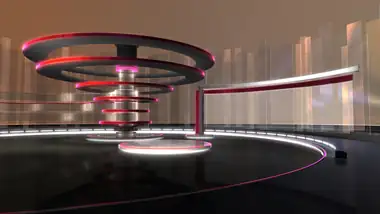
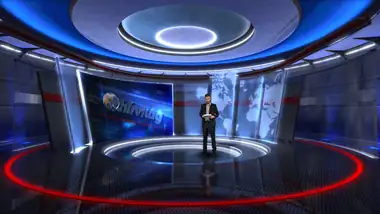
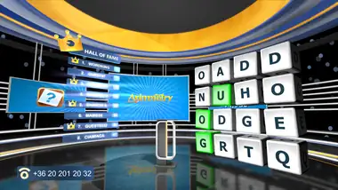
Broadcast environments
Real-time 3D graphics with professional solutions.
The scenes in this gallery were created for Aximmetry virtual studio software and are used by live television broadcasters.
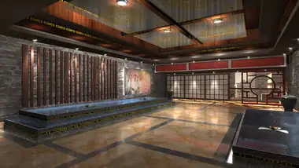
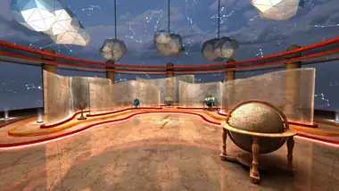
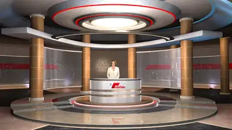
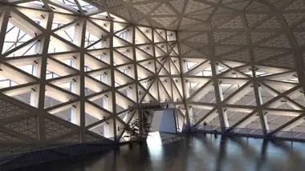
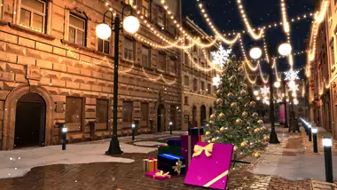
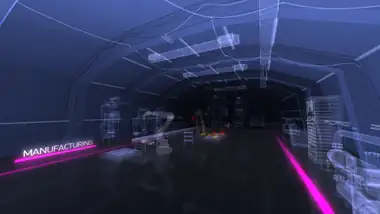
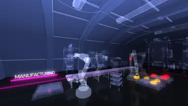
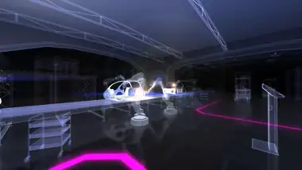
Interactive exhibition
T-System touch-screen panorama installation
An interactive presentation with three large monitors and a touch-screen interface. Visitors can move freely between the virtual sites and explore the content without getting lost or missing important information.
Custom projects
Bring your virtual space to life.
Have an idea for a virtual studio, a real-time scene or an interactive installation? Contact us to discuss your requirements.
Get in touch →